Trainee Aeronautical Engineer
SriLankan Airlines Engineering · December 2024 – May 2025
Completed a six-month industrial training placement across seven specialised aircraft-maintenance workshops, base-maintenance hangars, and battery facilities supporting Airbus A320-family and A330 aircraft.
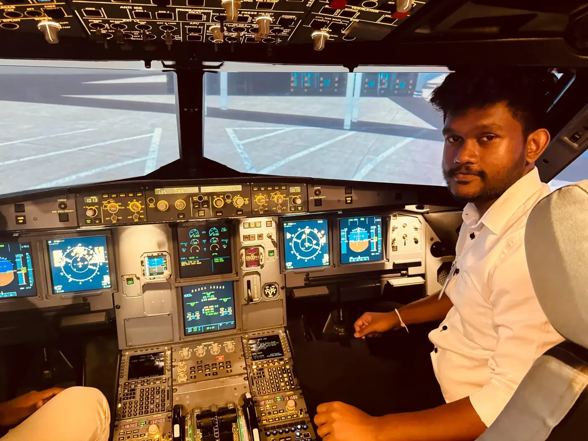
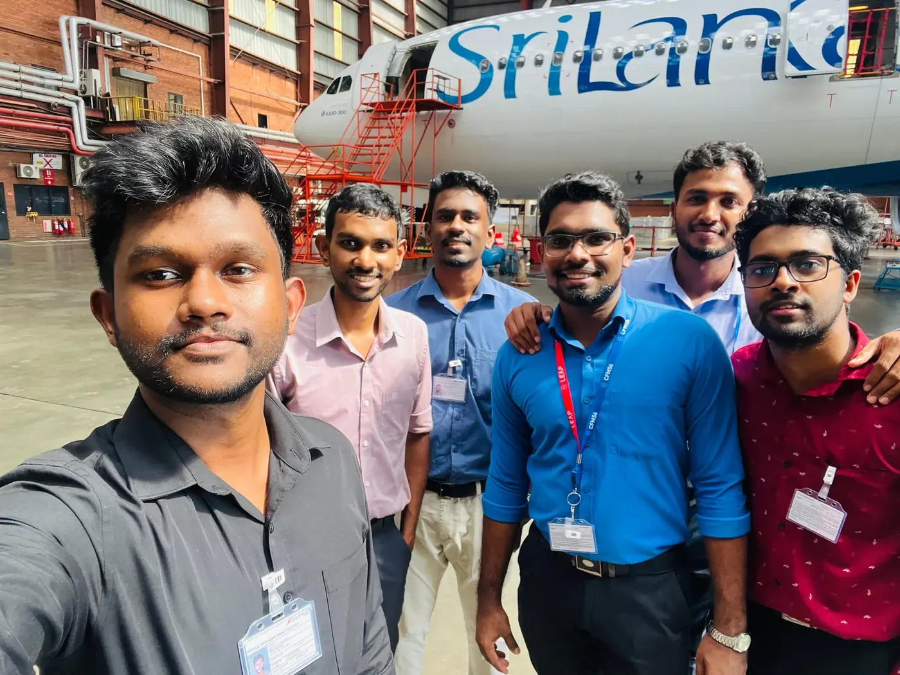
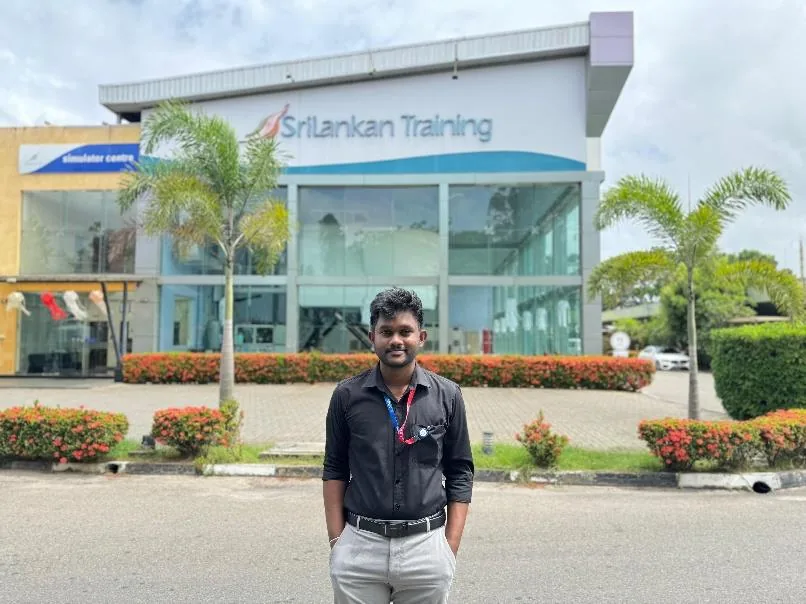
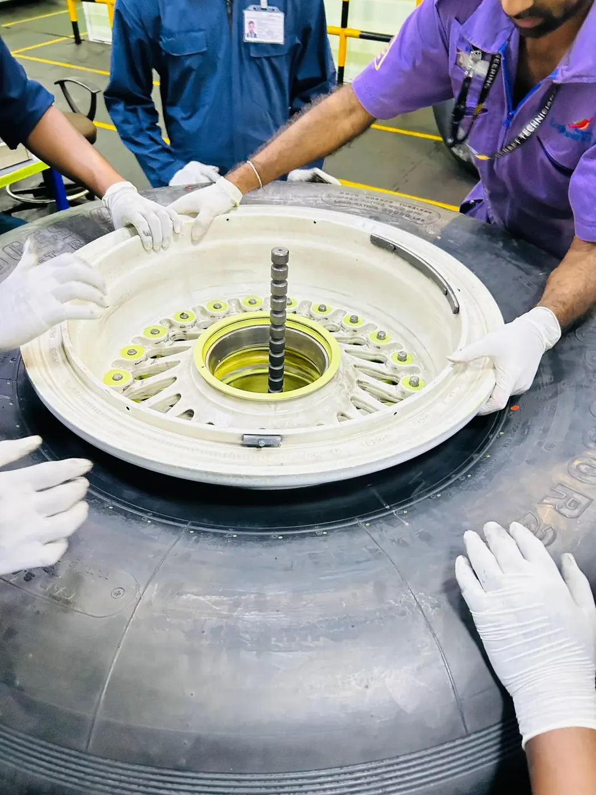
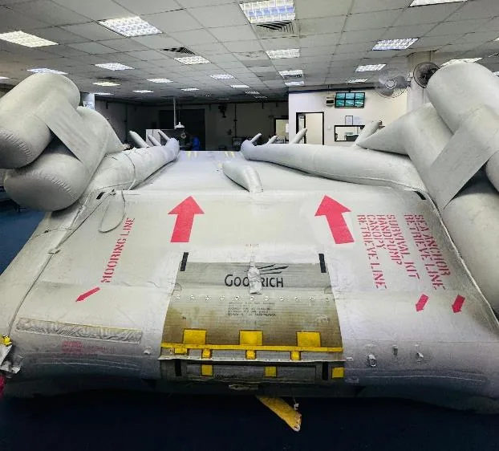
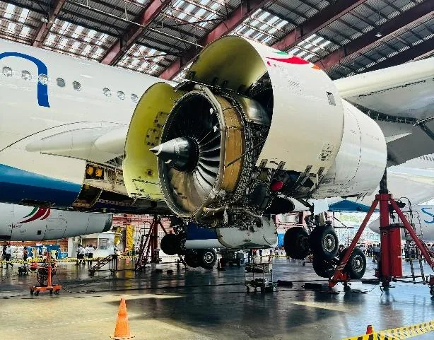
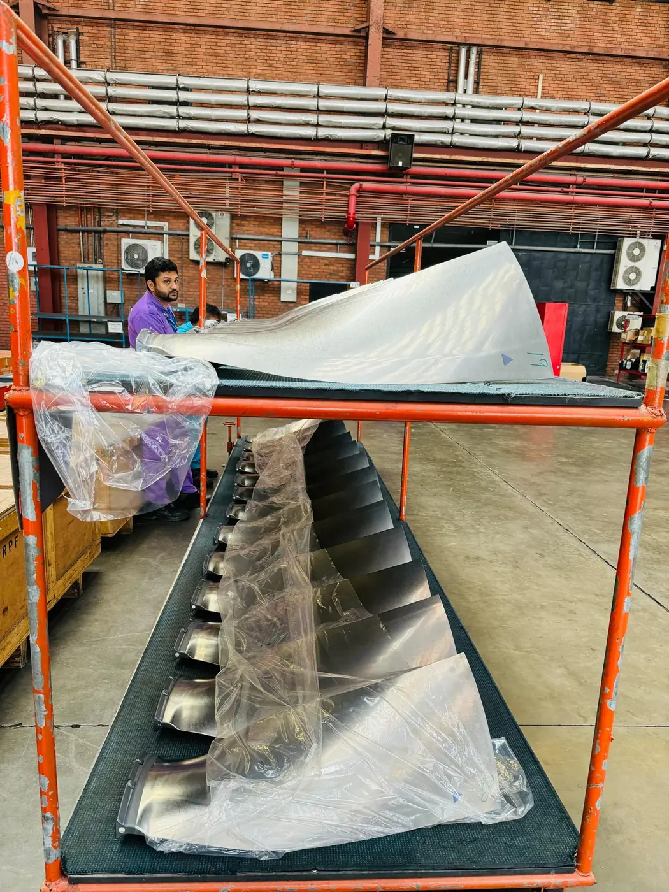
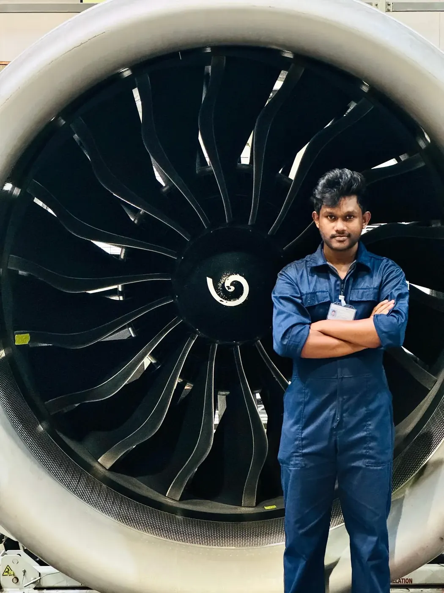
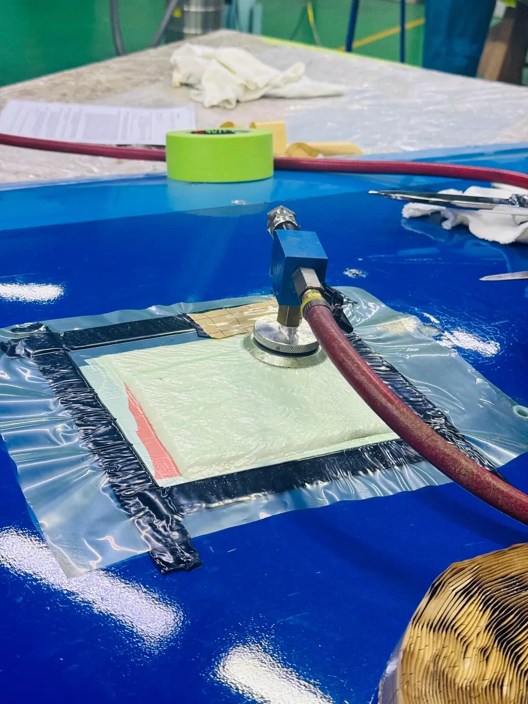
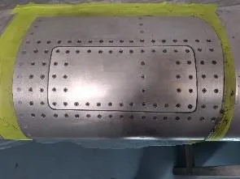
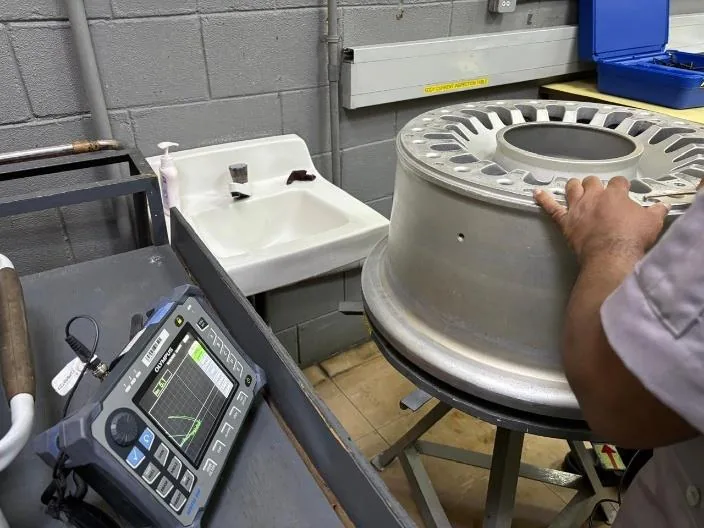
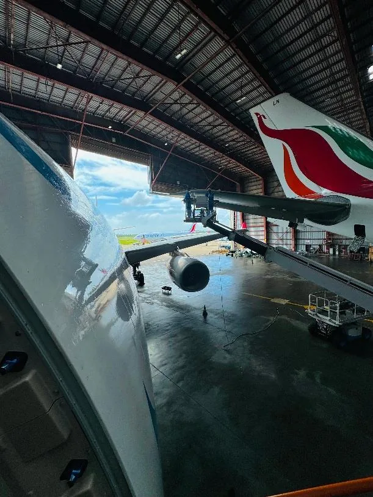
Training Overview
Completed a six-month industrial training placement at SriLankan Airlines Engineering, gaining practical exposure to aircraft maintenance, component overhaul, inspection, repair, engineering documentation, and aviation safety. The training covered line and base maintenance operations, specialised component workshops, and the maintenance practices used for Airbus A320-family and A330 aircraft.
Wheels and Brakes Workshop
- Participated in the disassembly and assembly of aircraft wheel units from main and nose landing-gear systems.
- Recorded wheel-hub part numbers, serial numbers, tyre conditions, and visible defects before maintenance.
- Assisted with tyre deflation, bearing and circlip removal, bead separation, wheel-hub dismantling, component cleaning, lubrication, and reassembly.
- Applied appropriate high-temperature bearing grease and graphite-based lubricant to wheel bolts, washers, and threaded areas.
- Gained experience with torque-controlled assembly procedures and nitrogen inflation of aircraft tyres.
- Studied wheel safety components, including thermal plugs, overpressure relief valves, tyre-pressure sensors, wire-locking mechanisms, and self-locking wheel-hub nuts.
- Examined aircraft carbon brake assemblies, including rotors, stators, hydraulic pistons, and the independent hydraulic systems used to provide braking redundancy.
Safety Workshop
- Assisted with the inspection and maintenance of cabin safety equipment, including slide rafts, life jackets, seat belts, fire extinguishers, and emergency equipment.
- Observed the rapid inflation and leakage inspection of an Airbus aircraft slide raft.
- Supported the folding, air removal, compression, vacuum packing, and repacking of slide-raft assemblies and their gas cylinders.
- Inspected, folded, labelled, and vacuum-packed inflatable safety jackets according to workshop procedures.
- Assisted with cleaning and inspecting aircraft seat belts before their return to service.
- Developed an understanding of the inspection intervals, traceability requirements, serial-number recording, and expiry-date documentation used for safety equipment.
Engine Module Workshop
- Gained exposure to the CFM56, LEAP, V2500, and Rolls-Royce Trent 700 gas turbine engines used within the SriLankan Airlines fleet.
- Studied the operation of two-spool and three-spool turbofan engines, including compressor stages, combustors, turbines, bypass flow, and shaft arrangements.
- Learned how aircraft engines are started using pneumatic power supplied by the auxiliary power unit, another operating engine, or ground equipment.
- Observed a complete Rolls-Royce Trent 700 fan-blade replacement on an Airbus A330 engine.
- Observed engine and APU borescope inspections used to identify cracks, corrosion, wear, and foreign-object damage.
- Became familiar with the Aircraft Maintenance Manual, particularly ATA Chapter 72 relating to engine maintenance.
- Studied engine fuel and oil-system components, including the low- and high-pressure fuel pumps, fuel-cooled oil cooler, air–oil heat exchanger, fuel-metering unit, and electronic engine controller.
- Developed an understanding of active clearance-control systems, compressor bleed systems, stall and surge prevention, and accessory gearbox operation.
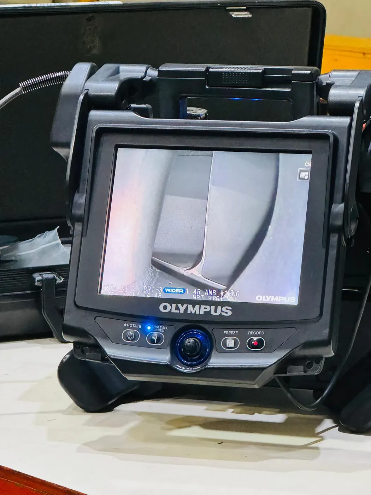
Paint and Composite Workshop
- Observed carbon- and glass-fibre component repairs using vacuum-bagging and wet-layup methods.
- Studied the functions of peel ply, perforated release film, bleeder fabric, separator film, breather layers, heat blankets, and vacuum systems.
- Observed the repair of an aircraft belly panel using a carbon-fibre repair patch and controlled curing procedures.
- Assisted with surface preparation, sanding, painting, resin application, corrosion protection, and the repair of non-structural cabin components.
- Gained exposure to plastic-welding methods used to repair damaged cabin and lavatory components.
- Supported modification work for the installation of a cabin Wi-Fi module and the replacement of a cockpit USB connection with a USB Type-C port.
- Observed the preparation and repainting of flap-track fairings and the repair of emergency-slide casings.
Structural Workshop
- Gained exposure to structural inspection, damage assessment, component fabrication, and repair of aircraft ribs, spars, stringers, skin panels, brackets, and control surfaces.
- Observed the permanent repair of an Airbus A321 nose-section dent caused by a bird strike.
- Followed the repair process from visual inspection and Structural Repair Manual consultation to damaged-material removal, doubler fabrication, riveting, corrosion protection, and repainting.
- Learned how rivet pitch, edge distance, rivet size, and repair geometry are determined using approved structural-repair documentation.
- Observed the replacement of an engine C-duct fairing bracket and the repair of an aircraft slat.
- Gained familiarity with sheet-metal rolling, drilling, bending, hydraulic pressing, welding, riveting, and structural-forming equipment.
- Studied different aircraft fasteners, including solid-shank, blind, tubular, CherryMAX, and CherryLOCK rivets.
- Received exposure to cockpit flight controls, flight displays, flight computers, and the electronic equipment located below the cockpit deck.
Non-Destructive Testing Workshop
- Developed practical knowledge of liquid penetrant testing, eddy-current testing, and magnetic-particle inspection.
- Observed the inspection of aircraft wheel hubs, wheel bolts, engine-mounting bolts, torque bars, turbine blades, landing-gear parts, and structural components.
- Learned the surface preparation, penetrant application, dwell time, cleaning, drying, developer application, ultraviolet inspection, and post-cleaning stages of fluorescent liquid penetrant testing.
- Observed eddy-current inspections used to detect surface and near-surface defects in conductive materials.
- Became familiar with rotating probes used to inspect wheel-hub bolt holes and rotating platforms used for wheel-hub examination.
- Studied the use of magnetic flux leakage and magnetic particles to identify discontinuities in ferromagnetic components.
- Gained an understanding of how NDT results are interpreted and documented before components are approved for further maintenance or service.
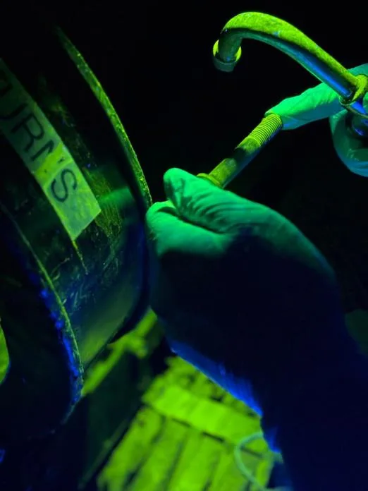
Accessories Workshop
- Assisted with the cleaning and servicing of aircraft environmental-control-system heat exchangers.
- Gained exposure to alkaline cleaning, high-pressure washing, steam cleaning, compressed-air drying, surface cleaning, and oven drying.
- Assisted with the calibration of a rudder actuator using a hydraulic test rig and compared measured displacement values with manufacturer specifications.
- Participated in the disassembly, cleaning, O-ring replacement, reassembly, and preparation of cargo-bay roller assemblies.
- Gained an understanding of the repair, calibration, and overhaul of line-replaceable units, hydraulic components, lavatory equipment, and cargo-handling devices.
Base Maintenance and Hangar Operations
- Observed scheduled aircraft maintenance activities inside the narrow-body and wide-body hangars.
- Gained exposure to A-check and C-check procedures, aircraft jacking, engine inspections, borescope inspections, aircraft washing, paint removal, structural work, and cabin maintenance.
- Observed an ongoing 2C-check maintenance programme on an Airbus A330 aircraft.
- Learned how multiple engineering teams, workshops, planners, technicians, and inspectors coordinate during heavy-maintenance activities.
- Developed an understanding of hangar access control, work-area safety, component traceability, approved documentation, and certification requirements.
Aircraft Battery Maintenance
- Gained exposure to the maintenance of aircraft Nickel–Cadmium batteries used for APU starting and emergency electrical power.
- Studied battery inspection, condition recording, charging, controlled discharging, capacity testing, electrolyte servicing, terminal inspection, and cell replacement.
- Learned about battery construction, charging procedures, workshop safety, and the importance of following the Component Maintenance Manual.
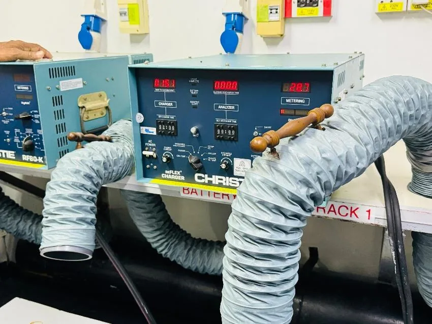
Engineering Operations and Professional Development
- Developed an understanding of line maintenance, base maintenance, Approved Maintenance Organisation operations, and Continuing Airworthiness Management Organisation responsibilities.
- Followed aviation safety practices involving personal protective equipment, restricted-area access, chemical handling, compressed gases, equipment operation, and waste disposal.
- Gained experience working with Aircraft Maintenance Manuals, Structural Repair Manuals, Component Maintenance Manuals, part numbers, serial numbers, and maintenance records.
- Strengthened communication, teamwork, adaptability, time management, attention to detail, and professional discipline through interaction with engineers, technicians, supervisors, and maintenance planners.